Samenvatting
De geo-wereld is in beweging. Traditionele OGC-webservices zoals WCS, WMS en WFS maken steeds vaker plaats voor OGC API's en cloud-native methoden voor datadistributie. Voor raster- en multidimensionale data zijn dit de belangrijkste nieuwe technologieën:
OGC API - Coverages: de moderne opvolger van WCS.
STAC (SpatioTemporal Asset Catalog): een standaard voor het catalogiseren en ontdekken van geo-assets.
Cloud Optimized GeoTIFF (COG): een cloud-native opslagformaat voor rasterdata.
DCAT / DCAT-AP-NL / ISO 19115: metadatastandaarden voor catalogi zoals het Nationaal Georegister (NGR).
Deze standaarden zijn geen concurrenten van elkaar. Ze lossen elk een ander probleem op en werken het best samen.
Raster- en multidimensionale datasets werden vroeger beschikbaar gesteld via de OGC Web Coverage Service (WCS). Een typische WCS-aanvraag zag er zo uit:
Client → GetCapabilities → DescribeCoverage → GetCoverage → GeoTIFF
De moderne vervanger is OGC API - Coverages. Die biedt RESTful toegang tot coverage-resources en ondersteunt formaten als GeoTIFF en NetCDF. OGC API Coverages is onderdeel van de OGC Rest API standaarden.
- De OpenAPI specificatie geeft alle collecties weer (GetCapabilities)
- /collections/{id} geeft informatie over de betreffende collectie (DescribeCoverage)
- /collections/{id}/coverage geeft het desbetreffende coverage (GetCoverage)
OGC API - Coverages is de logische, op standaarden gebaseerde doorontwikkeling van WCS.
De geo-wereld omarmt steeds vaker cloud-native benaderingen voor rasterdata. In plaats van alles via een gespecialiseerde service als WCS te laten lopen, sla je data direct op in cloud-objectopslag. Clients halen dan alleen de stukken data op die ze echt nodig hebben.
De twee dominante cloud-native rasterformaten zijn:
- Cloud Optimized GeoTIFF (COG)
- Zarr
Een COG is een GeoTIFF-bestand dat slim georganiseerd is voor efficiënte toegang via HTTP en cloud-objectopslag. De belangrijkste kenmerken:
- Interne tiling
- Meerdere resolutieniveaus (overviews)
- Ondersteuning voor HTTP range requests
- Compatibel met bestaande GeoTIFF-tooling
Clients zoals GDAL, Rasterio, QGIS en ArcGIS halen zo alleen de stukken op die nodig zijn voor een specifieke weergave of analyse.
Client → HTTP Range Requests → Cloud Optimized GeoTIFF
Voor veel datasets – zoals AHN-hoogtemodellen, orthofoto's, satellietbeelden en landbedekkingskaarten – maakt dit aparte raster-extractieservices overbodig.
Omdat COG volledig compatibel is met bestaande GeoTIFF-workflows, kunnen organisaties overstappen op cloud-native architecturen zonder hun productieomgevingen te hoeven verbouwen.
COG is ideaal voor traditionele rasterproducten. Zarr is juist ontworpen voor multidimensionale wetenschappelijke data. Denk aan dimensies als:
x, y, z, tijd, scenario, ensemble
Zarr slaat data op als onafhankelijk opvraagbare chunks, direct uit cloud-objectopslag. Daarmee is Zarr bij uitstek geschikt voor:
- Klimaatprojecties
- Weersvoorspellingen
- Hydrologische simulaties
- Omgevingsmodellen
- Digital Twin-simulaties
- Aardsysteemmodellen
- Statistiek
De wetenschappelijke wereld combineert Zarr steeds vaker met tools als xarray en Dask om grote multidimensionale datasets te analyseren – zonder speciale middleware.
Beide formaten vormen samen de cloud-native opslaglaag:
Objectopslag
In deze architectuur:
- Is opslag direct toegankelijk.
- Blijft data in objectopslag staan.
- Halen clients alleen de benodigde chunks of tegels op.
- Zijn aparte rasterservices optioneel, niet verplicht.
Dit is een flinke breuk met traditionele, service-georiënteerde architecturen.
COG en Zarr regelen efficiënte opslag en toegang. Maar ze vertellen je niet welke data beschikbaar is. Gebruikers willen antwoord op vragen als:
- Welke datasets bestaan er?
- Welke assets horen bij een dataset?
- Welke tijdsperioden zijn beschikbaar?
- Welk rasterbestand dekt mijn interessegebied?
- Welk bestand moet ik openen?
Hier komt [STAC] om de hoek kijken.
STAC (SpatioTemporal Asset Catalog) biedt een gestandaardiseerde manier om geo-assets te beschrijven en te ontdekken. Een STAC-catalogus is opgebouwd uit 4 concepten:
Catalog → Collection → Item → Asset
Hierbij is Item het metadata record en Asset de daadwerkelijke (raster)data
In een rastercontext ziet dat er zo uit:
Collection → Item → COG Asset
of:
Collection → Item → Zarr Asset
STAC-metadata beschrijft ruimtelijke en temporele dekking, beschikbare assets, banden of variabelen, verwerkingsniveau en platform- en sensorinformatie. De eigenlijke data blijft gewoon in cloud-objectopslag staan.
Onthoud: STAC is in de eerste plaats een assetcatalogus, geen datatoegangsservice.
Een typische cloud-native workflow ziet er zo uit:
Gebruiker → STAC Search → Asset URL → COG of Zarr → Toegang via client
Voorbeelden:
- Een AHN-tegel vinden via een STAC-catalogus en de bijbehorende COG laden.
- Een klimaatmodelresultaat ontdekken en het bijbehorende Zarr-dataset direct openen in xarray.
In beide gevallen regelt STAC de ontdekking; het cloud-native formaat verzorgt de efficiënte gegevenstoegang. De client gebruikt HTTP range requests om alleen de relevante byte-ranges op te halen:
100 GB COG → Nodig: 2 km² rondom Amsterdam → Metadata lezen → Alleen relevante byte-ranges opvragen → Downloaden: een paar MB
Zarr past hetzelfde principe toe op multidimensionale datasets.
STAC, OGC API Coverages en OGC API Records lijken op het eerste gezicht concurrenten. In de praktijk lossen ze elk een ander probleem op en werken ze het best samen.
Op het hoogste niveau is er de datasetcatalogus. Die beantwoordt vragen als: welke datasets zijn beschikbaar, wie publiceert ze, onder welke licentie zijn ze te gebruiken, en welke services en downloads zijn er?
Dit is het domein van DCAT-AP-NL, het Nederlandse profiel voor ISO-19115 en het Nationaal Georegister. Voorbeelden van datasets op dit niveau:
- AHN5
- BRO Model Grondwaterspiegeldiepte
- BGT
- BRP
- Nationaal Klimaatdataset
OGC API Coverages heeft een andere positie in de architectuur. In plaats van datasets of assets te catalogiseren, biedt het een gestandaardiseerde interface voor toegang tot en verwerking van coverages. Typische mogelijkheden:
- Coverage ophalen
- Ruimtelijk subsetten
- Dimensionaal snijden
- CRS-transformaties, herprojektie en resampling
Anders dan STAC biedt OGC API Coverages een operationele toegangsinterface.
Cloud-native toegang:
STAC Item → COG / Zarr → Client haalt data op via HTTP Range requests
Service-georiënteerde toegang:
DCAT Dataservice → OGC API Coverages → Server serveert data naar de Client
Beide patronen kunnen naast elkaar bestaan en zelfs dezelfde onderliggende dataset ontsluiten:
AHN Dataset
- STAC + COG
- OGC API Coverages
Klimaatmodel
- STAC + Zarr
- OGC API Coverages
Deze technologieën zijn het krachtigst wanneer je ze combineert in één architectuur:

In deze architectuur:
Bieden ISO-19115 / DCAT gezaghebbende datasetmetadata.
Verzorgt STAC ontdekking op assetniveau.
Bieden COG en Zarr cloud-native opslag.
Biedt OGC API Coverages op standaarden gebaseerde servicetoegang en server-side verwerkingsmogelijkheden.
Deze technologieën zijn geen alternatieven voor elkaar. Ze bedienen elk een andere laag van een moderne geo-architectuur en zijn het effectiefst wanneer je ze samen inzet.
Ondanks de kracht van STAC en COG zijn sommige toepassingen bij uitstek geschikt voor OGC API - Coverages.
Voorbeelden: weersvoorspellingen, klimaatsimulaties, luchtkwaliteitsmodellen, hydrologische simulaties en Digital Twin-simulaties.
Dimensies kunnen zijn: x, y, z, tijd, scenario.
Dit zijn echte coverage-datasets, geen verzamelingen statische rasters. Coverage-API's bieden expliciete ondersteuning voor dimensionaal snijden en coverage-semantiek.
OGC API - Coverages voert herprojektie uit op de server:
Invoer-CRS: EPSG:28992 → Uitvoer-CRS: EPSG:4326
Clients hoeven dit niet zelf te doen.
Coverage-services ondersteunen server-side bewerkingen zoals nearest neighbour, bilineaire interpolatie en kubische interpolatie. Dit is een erfenis uit het WCS-ecosysteem en blijft een belangrijke kracht van coverage-services.
Naast OGC API Coverages en Zarr is er een derde optie voor multidimensionale omgevingsdata: OGC API Environmental Data Retrieval (EDR). EDR biedt een familie van lichtgewichte interfaces voor toegang tot ruimtelijk-temporele omgevingsdata. De standaard is goedgekeurd door het OGC en beschikbaar in versie 1.1.
Waar OGC API Coverages gericht is op volledige coverage-subsetting, richt EDR zich op gerichte queries op specifieke locaties, routes of gebieden. EDR ondersteunt de volgende querypatronen:
- Position: geef de waarden op een specifiek punt.
- Radius: geef de waarden binnen een straal rondom een punt.
- Area: geef de waarden binnen een polygoon.
- Cube: geef de waarden binnen een 3D-blok.
- Trajectory: geef de waarden langs een route.
- Corridor: geef de waarden in een strook langs een route.
EDR is daarmee bij uitstek geschikt voor operationele toepassingen. Denk aan:
- "wat is de windsnelheid op coördinaat X?",
- "wat zijn de luchtkwaliteitswaarden langs deze rijksweg?" of
- "geef mij de watertemperatuur op dit meetpunt voor de afgelopen 7 dagen".
De drie opties bedienen elk een ander gebruik. Hieronder een overzicht van de belangrijkste verschillen:
| Kenmerk |
OGC API EDR |
OGC API Coverages |
Zarr |
| Type |
API |
API |
Opslagformaat |
| Focus |
Locatiequery |
Coverage-subsetting |
Directe opslag |
| Verwerking |
Server-side |
Server-side |
Client-side |
| Complexiteit |
Laag |
Hoog |
Gemiddeld |
| Geschikt voor |
Operationele data en real-time |
Wetenschappelijke datacubes |
Grootschalige analyse |
| Querypatronen |
Punt, lijn, gebied, kubus |
Dimensionaal snijden, subset |
Niet van toepassing |
| Ecosysteem |
Volwassen |
Nog in ontwikkeling |
Volwassen |
- Eenvoudig te implementeren en te gebruiken.
- Lichtgewicht: ideaal voor gerichte locatiequeries.
- Goede ondersteuning voor trajectories en corridors.
- Geschikt voor real-time en operationele omgevingsdata.
- Volwassener ecosysteem dan OGC API Coverages.
- Ondersteunt CoverageJSON als uitvoerformaat.
- Minder geschikt voor grote raster-downloads of volledige coverage-subsetting.
- Geen volledige ondersteuning voor CRS-transformaties en resampling.
- Minder geschikt voor complexe wetenschappelijke datacubes.
- Voert geen server-side interpolatie of herprojektie uit.
De keuze hangt af van de toepassing en de gebruiker:
OGC API EDR: kies dit voor operationele omgevingsdata en eenvoudige locatiegebaseerde queries. Denk aan weerstoepassingen, luchtkwaliteitsmonitoring en real-time sensordata.
OGC API Coverages: kies dit voor volledige coverage-subsetting, CRS-transformaties en complexe multidimensionale datacubes. Dit is de meest complete opvolger van WCS.
Zarr: kies dit wanneer data scientists direct en grootschalig toegang nodig hebben. Zarr werkt het best in combinatie met Python-tools als xarray en Dask, zonder server-side middleware.
In de praktijk kunnen alle 3 naast elkaar bestaan op dezelfde dataset:
Klimaatmodel
- OGC API EDR → Locatiequery's voor operationeel gebruik
- OGC API Coverages → Subsetting en herprojektie voor GIS-gebruikers
- Zarr → Grootschalige analyse voor data scientists
De sterkste clientondersteuning bestaat voor STAC + COG. Desktop GIS-producten en geo-bibliotheken hebben al volwassen ondersteuning voor HTTP range requests, Cloud Optimized GeoTIFFs, STAC-catalogi en GDAL-gebaseerde rastertoegang.
QGIS kan efficiënt datasets ontdekken via STAC, COG's direct lezen en alleen de benodigde rasterblokken laden.
ArcGIS biedt vergelijkbare ondersteuning voor STAC-catalogi, cloud-native rasters en imageservices.
OGC API - Coverages is de conceptuele opvolger van WCS. De clientondersteuning is echter nog minder volwassen dan voor STAC, COG, WMS, WCS en WMTS. De specificatie is solide, maar het ecosysteem is nog volop in ontwikkeling.
Aanbevolen patroon
Behandel de STAC API als een distributie of service van een DCAT-dataset:
DCAT Dataset:
- OGC API Features
- OGC API Coverages
- Downloadservice
- STAC API
Het DCAT-record bevat een link naar het STAC-eindpunt. De STAC Collection linkt terug met de relatie describedby, die verwijst naar het gezaghebbende DCAT-record. Zo ontstaat bidirectionele navigatie:
DCAT Dataset ↔ STAC Collection
ex:ahn5
a dcat:Dataset ;
dct:title "AHN5"@nl ;
dcat:distribution ex:ahn5-stac .
ex:ahn5-stac
a dcat:Distribution ;
dct:title "AHN5 STAC API"@en ;
dcat:accessURL <https://api.example.nl/stac/> ;
dct:format "application/json" .
Voorbeeld STAC-backlink
{
"id": "ahn5-dsm",
"type": "Collection",
"links": [
{
"rel": "describedby",
"href": "https://data.example.nl/datasets/ahn5",
"type": "text/html",
"title": "Gezaghebbend DCAT-metadatarecord voor AHN5"
}
]
}
De geo-wereld convergeert naar een complementaire, gelaagde architectuur:
- DCAT/ISO 19115 voor gezaghebbende datasetcatalogisering.
- STAC voor cloud-native assetontdekking.
- COG voor efficiënte rasteropslag en directe toegang.
- OGC API - Coverages voor op standaarden gebaseerd subsetten en multidimensionale coveragetoegang.
Voorbeelden: AHN, orthofoto's, satellietarchieven
Aanbeveling: STAC + COG
Voorbeelden: klimaatprojecties, hydrologische modellen, luchtkwaliteitssimulaties, Digital Twin-simulatie-uitvoer
Aanbeveling: STAC + OGC API Coverages of STAC + OGC API Coverages + Zarr, afhankelijk van de analytische vereisten.
Voor operationele locatiegebaseerde queries is OGC API EDR een lichtgewicht en volwassen alternatief dat goed naast OGC API Coverages en Zarr ingezet kan worden.
Voor de meeste huidige rastercases – zeker Earth Observation-archieven en nationale basissets – biedt STAC + COG de beste ecosysteemondersteuning en clientinteroperabiliteit.
Voor geavanceerde multidimensionale Digital Twin-, klimaat-, hydrologische en simulatiedatasets blijft OGC API - Coverages de meest complete, op standaarden gebaseerde opvolger van WCS en biedt het mogelijkheden die STAC en COG alleen niet volledig kunnen invullen.
Metadata-API-laag:
Metadatamodellaag:
- DCAT (DCAT-AP / DCAT-AP-NL)
- STAC
- ISO 19115 (Nederlands profiel op ISO 19115/19119)
- GeoDCAT-AP
Datatoegangslaag:
- OGC API Coverages
- OGC API EDR
- OGC API Features
- OGC API Tiles
Opslaglaag: